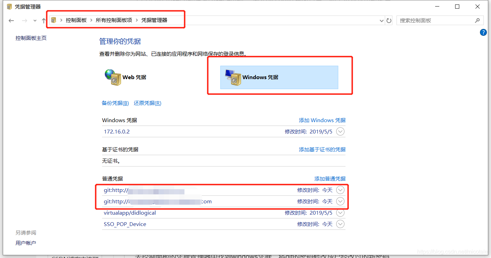

0%
Git SubModule
常见操作
1
2
3
4
| $ git submodule init && git submodule update
$ git clone https://github.com/xx/xx.git --recursive
$ git submodule sync
$ git submodule add https://github.com/xxxx/xxxxx.git
|
批量操作submodule
1
2
3
4
| $ git submodule foreach <command>
比如:
$ git submodule foreach git checkout master
$ git submodule foreach git submodule update
|
删除git submodule
1
2
3
4
5
6
7
8
9
10
| $ git add .gitmodules
$ git rm --cached submodule_name
$ rm -rf submodule_name
# 第四步：编辑.gitmodules文件, 移除对应的submodule信息
# 第五步：编辑.git/modules文件, 移除对应的submodule信息
# 第六步：编辑.git/config 移除对应的submodule信息
# ===== 上述方式不行，可尝试下述
$ git submodule deinit <submodule-name>
# ===== 上述方式不行，可尝试下述
$ git rm <submodule-name>
|
子仓如何与远端保持同步
1
2
3
| # 子仓的更新，是单独的，需要进入子仓目录，手动与远端同步，例如：
$ cd sub-dir && git fetch origin master && git rebase origin/master
# 完成同步后，需要在主仓下提交子仓的改动，以保存主仓对子仓的最新引用
|
Git Ops
查看last commitId
1
2
3
4
| $ git log -1 --pretty=format:%H
# 输出 7b6b2803d2b7135b239d062847816e55a810371e
$ git log -1 --pretty=format:%h
# 输出 7b6b280
|
查看某次commit的内容
查看目录的diff信息
diff迁移
script1
2
3
4
| $ git diff > diff.patch
$ git apply --stat diff.patch
$ git apply --check diff.patch
$ git apply diff.patch
|
查看log的其他信息
1
| git --no-pager log -2 --author="HQ" --pretty=format:"%h"
|
指定tag/branch克隆仓库
1
| $ git clone -b <tag-name|branch-name> xxxxxxxxx.git
|
获取指定tag下的仓库地址
1
2
| # 浏览器地址上，替换对应的tag名称即可
# https://gitlab.com/gitlab-org/gitaly/-/tree/v13.12.8?ref_type=tags
|
查看分支合并图
查看标签信息
查看git命令操作历史
git rebase发生冲突怎么办
1
2
3
4
| $ git rebase --skip
$ git rebase --abort
$ git rebase --continue
# 切记，整个rebase解决冲突的过程中，都不需要自己去单独执行commit动作
|
删除本地认证
1
2
| $ git config --global --unset credential.helper
$ git config credential.helper store
|

HTTP认证方式更改为SSH
1
2
3
4
5
6
7
8
9
10
11
12
13
14
15
16
17
18
19
20
21
22
23
24
25
| $ git config --global url.ssh://git@github.com/.insteadOf https://github.com/
# 执行上述命令后，可以查看下全局的.gitconfig配置如下：
[url "ssh://git@gitlab.sss.com/"]
insteadOf = https://gitlab.sss.com/
[url "ssh://git@pkg.sss.com/"]
insteadOf = https://pkg.sss.com/
[http]
sslVerify = false
[url "ssh://git@github.com/"]
insteadOf = https://github.com/
# 完成替换后，记得添加ssh public key到gitlab profile配置里
# 删除Local认证
$ git config --local --unset credential.helper
# 删除全局认证
$ git config --global --unset credential.helper
# 删除系统认证
$ git config --system --unset credential.helper
# 设置记住密码（默认15分钟）：
$ git config --global credential.helper cache
# 如果想自己设置时间，可以这样做
$ git config credential.helper 'cache --timeout=3600'
# 永久存储密码
$ git config --global credential.helper store
# 清理缓存的账号密码
$ git credential-manager uninstall
|
如何知道分支是从哪拉出来的
1
2
3
| $ git reflog --date=local | grep 本地分支名
$ git log --oneline --decorate --graph --all
# 可借助sourceTree等工具查看，比较稳
|
git的两点diff和三点diff区别是啥
1
2
| # 三点diff会找到两边的共同祖先，然后拿到祖先到最新版本的差异，可能会有以下应用场景：
# 1、feature分支提交了，很多次，我想知道，我的feature相比于主干分支(master)的所有改动内容，然后codereview
|